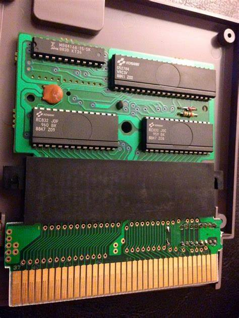

<html>
  <Head>
<meta http-equiv="Content-Type" content="text/html; charset=utf-8">

    
<link rel="stylesheet" href="../static/css/bootstrap.min.css"/>
<link rel="stylesheet" href="../static/css/bootstrap-theme.min.css"/>


    <link rel="stylesheet" href="../static/css/fonts/crmison.css"/>
    <link rel="stylesheet" href="../static/css/fonts/fira_code.css"/>
    <link rel="stylesheet" href="../static/css/fonts/ptsans.css"/>
    <link rel="stylesheet" href="../static/css/katex.min.css"/>
    <link rel="stylesheet" href="../static/css/wiki.css"/>
    <link rel="stylesheet" href="../static/css/codehilite.css"/>

    <script src="../static/js/jquery.min.js"></script>
    <script src="../static/js/bootstrap.bundle.min.js"></script>
    <script src="../static/js/katex.min.js"></script>
    
    

    <title>虚拟化：进程抽象</title>
  </Head>
  <body>
   
   
<nav class="navbar fixed-top navbar-expand-lg navbar-dark bg-dark">
  <a class="navbar-barnd" href="index.html">Yanyan's Wiki</a>
  <div class="collapse navbar-collapse">
    <div class="navbar-nav">
      <a class="nav-item nav-link active" href="OS2020.html">
        
        操作系统 (2020)</a>
      <a class="nav-item nav-link active" href="SysLab2020.html">
        计算机系统综合实验 (2020)</a>
      <a class="nav-item nav-link active" href="ICS_NJU.html"> 加入我们</a>
    </div>
    <form class="form-inline" autocomplete="off">
      <input id="token-input" type="text" oninput="login();" maxlength="16"
        data-toggle="tooltip" data-placement="bottom"
        title="用于确定身份的作业提交 SHA-1 hash digest。更改后回车或刷新网页生效"></input>
    </form>
  </div>
</nav>

<center>
  <div class="article-container">
    <div class="article">
      <h1 id="_1">虚拟化：进程抽象</h1>
<div markdown="1"><div class="fenced fenced-blue"><div>
<h4 id="_1">本讲阅读材料</h4>
<p><a href="http://pages.cs.wisc.edu/~remzi/OSTEP/">教科书 (Operating Systems: Three Easy Pieces, OSTEP)</a> 第 3—6 章。课后习题：</p>
<ul>
<li>阅读 <code>fork</code>, <code>execve</code>, <code>_exit</code> 的手册；</li>
<li>查阅网络、编写测试代码，理解多线程程序 (进程中使用 pthreads 创建线程) <code>fork</code>, <code>execve</code>, 和 <code>_exit</code> 的行为。</li>
</ul>
</div></div></div>

<h2 id="_2">进程：虚拟计算机</h2>
<p>总的来说，如果程序只完成 “计算” 的任务而不做任何输入输出，它就可以看成是一个状态机。我们在之前的课程中，为进程的状态机模型做了相当多的铺垫，大家不妨回顾一下 “<a href="OS2020_Automata.html">程序的状态机模型及其应用</a>”。</p>
<p>我们不妨用 <math class="inline-math">(M, R)</math> 表示 (只有一个线程的) 进程某个时刻的状态——<math class="inline-math">M</math> 是它所有内存的数值，<math class="inline-math">R</math> 是它可见的寄存器的数值，例如 <code>rax</code>, <code>rbx</code>, <code>rip</code> 等 (但也有一些大家熟悉的寄存器进程是不可见的，例如 <code>cr0</code>, <code>cr2</code> 和 <code>cr3</code>)。无论是单线程还是多线程程序，无论指令是确定的还是不确定的，一次程序的执行看起来就是状态机上的一条路径：</p>
<p></img></p>
<p>回顾计算机发展的历史，最早的计算机上的程序就是这样独占计算机执行的。不过随着计算机越来越快但 I/O 设备速度无法跟上，如果处理器只运行一个程序，没一会儿就要等 I/O，真是太浪费了 (考虑到那时候的计算机比现在可贵多了)。能不能用一份计算机 (一个 <math class="inline-math">M</math> 和一个 <math class="inline-math">R</math> 和一个执行部件) 做出多个 <math class="inline-math">(M,R)</math> 同时运行的假象呢？</p>
<p>于是诞生了一个绝妙的想法：分时复用处理器。</p>
<h3 id="_3">在程序之间切换</h3>
<p>现在我们不妨假设我们有两个程序，它们的状态分别是 <math class="inline-math">P_1=(M, R)</math> 和 <math class="inline-math">P_2=(M', R')</math> (不妨想象成是 bash 和 gcc)。我们希望在一个只有一个 CPU 的计算机上 “同时” 执行它们。当然了，因为我们只有一个 CPU，所以一次还是只能执行一个程序的。我们不妨先我们先让处理器从 <math class="inline-math">(M,R)</math> 开始执行：</p>
<p><center><math class="inline-math">\ldots, (M_{i},R_{i})\to(M_{i+1},R_{i+1})\to(M_{i+2},R_{i+2})\to\ldots</math></center></p>
<p>只要我们能在某一个时刻，把正在执行的 <math class="inline-math">P_1 = (M_i, R_i)</math> 从处理器上拆下来，换上<math class="inline-math">P_2(M',R')</math> 继续执行，不就造成了并发执行的假象么？</p>
<p><center><math class="inline-math">\ldots, (M_{i+2},R_{i+2})\ {\color{red} \to }\ (M_{0}',R_{0}')\to(M_{1}',R_{1}')\to\ldots</math></center></p>
<p>在物理上，这是完全办得到的，在适当的时候停下 CPU (假设 CPU 提供了这个功能)，然后把内存条拔了换下一个，寄存器也顺便换掉，就好啦？这看起来一点也不好笑——如果大家经历过 “换卡带” 的时代，这个操作简直再正常不过了；而 fecux 里大量的 <code>.c</code> 文件就是下图中各种芯片 (状态机) 的模拟程序。</p>
<p></img></p>
<h3 id="_4">把多个程序载入内存</h3>
<p>如果我们的物理内存够大，能把 <math class="inline-math">P_1</math> 和 <math class="inline-math">P_2</math> 都加载到内存，我们就不需要真正实现物理上的切换。我们只需要硬件帮我们完成以下操作，就能实现 “虚拟” 的 CPU/内存切换。</p>
<ul>
<li>硬件应当提供一些机制 (一条/一些指令)，能够将某个保存在内存里的寄存器现场恢复到 CPU 上；</li>
<li>恢复寄存器现场的同时，我们能进入一个 “低运行权限” 的模式，例如，当我们加载 <math class="inline-math">P_1</math> 时，不能访问 <math class="inline-math">P_2</math> 和其他系统其他部分的内存；</li>
<li>在 “低运行权限” 模式运行时，当发生一些外部事件 (例如定时器 timeout)，能回到高权限模式和指定的入口地址执行。</li>
</ul>
<div markdown="1"><div class="fenced fenced-blue"><div>
<h4 id="_1">这就是处理器的虚拟化！</h4>
<p>大家已经反应过来了：中断/异常和虚拟存储/存储保护机制恰好可以完成这些任务！把处理器 “拆下来” 的机制就是中断/系统调用。实际上，虽然进程认为自己是独占计算机系统运行的，但这一切都是操作系统安排的假象。操作系统实际从一开始就驻留在内存中，并且配置了中断处理程序的入口地址，一旦进程发生中断/异常/系统调用，操作系统代码就立即接手执行。</p>
</div></div></div>

<p>一个细节是每个进程都要有自己的寄存器现场 <math class="inline-math">R</math>。好消息是寄存器和内存没有本质的区别，它们都是<strong>数据</strong>。所以寄存器的虚拟化也是非常容易地：只要我们能想办法把寄存器保存在某个地方，再切换到另一个进程的寄存器现场就行了。</p>
<p>这样，操作系统就不那么神秘了，它就是一个运行在计算机上的程序，其重要职责之一就是实现在中断/系统调用发生时对寄存器现场的保存，以及 <math class="inline-math">(M,R)\ {\color{red} \to }\ (M',R')</math> 的转换。正如我们上课时提到的，操作系统的本质是 “模拟” 每个进程状态机的执行，并在进程希望执行系统调用时接管 CPU 执行。</p>
<h2 id="_5">程序 = 状态机</h2>
<p>把程序看成状态机提供了宏观理解操作系统运行的视角——这个视角不仅在理解并发程序行为时非常有用，而且在理解操作系统中的进程时也非常有用：上面提到的 “虚拟化” 本质上就是我们在 “硬件” 这个状态机上，使用硬件提供的指令完成若干个 “模拟出的” 状态机的执行。</p>
<p>终于，我们觉得之前做的铺垫没有白费，大家真正对 “程序 = 状态机” 有了宏观又通透的理解：<strong>机器永远是对的</strong>。机器总是按照一定的规则执行：</p>
<ol>
<li>程序总是按照它的语义执行 (包括编译器)。指令总是按照处理器的实际电路执行。处理器的行为原则上满足手册的描述。</li>
<li>系统调用总是按照它的实现执行 (假设处理器的实现正确)，绝大部分行为都在 TFM 中被正确描述，但不排除实现和规约不一致的极少情况。</li>
</ol>
<h2 id="api">进程管理API</h2>
<h3 id="fork-exec-exit">Fork-Exec-Exit</h3>
<p>在状态机的基础上，我们可以把操作系统看成是进程的集合 <math class="inline-math">P = \{P_1, P_2, \ldots\}</math>，每个进程都是状态机某个瞬间的状态 <math class="inline-math">(M, R)</math>，每个状态机除了执行系统调用外，就只能对本状态机的状态进行修改。</p>
<p>自然地，我们需要提供一组 API 实现进程 (状态机) 的管理。如此，课上介绍的进程管理系统调用就非常清楚了：</p>
<ol>
<li>fork 将当前执行的状态 <math class="inline-math">s = (M, R)</math> 复制一份，得到一个新的进程 (状态机) <math class="inline-math">s'</math>。返回后，<math class="inline-math">s.\textrm{rax} = \textrm{pid}</math> (父进程返回子进程的进程号), <math class="inline-math">s'.\textrm{rax} = 0</math> 以区分复制和被复制的进程。除此之外，我们把进程理解成状态机的复制。</li>
<li>execve 将当前执行的状态机进行 “充值”。根据 <math class="inline-math">s=(M, R)</math> 中指定的参数 (<code>filename</code>, <code>argv</code>, <code>envp</code>)，将会充值成系统中的另一个程序 <code>filename</code> 的初始状态，并为 <code>main</code> 函数传入 <code>argv</code> 和 <code>envp</code> 参数。如果执行成功，状态机原先拥有的所有内存/寄存器都会被重置，因此过去的代码、数据都没有了；但如果执行失败，则会在原来的状态机上继续执行。</li>
<li>exit 将当前状态机从操作系统中销毁。</li>
</ol>
<div markdown="1"><div class="fenced fenced-green"><div>
<h4 id="_1">思考题：复杂的情况</h4>
<p>至少有两种情况会让事情变得复杂起来：</p>
<ol>
<li>进程持有操作系统的对象，例如打开的文件。此时复制的行为是什么？文件是被关闭，还是被 “打开两次”？</li>
<li>如果进程中有多个线程，复制/退出以后线程变成了什么？睡眠的线程会不会被唤醒？</li>
<li>退出以后，进程持有的操作系统对象资源如何释放？</li>
</ol>
<p>这些才是 “操作系统设计” 的真正内涵——你不妨想一想，如果你是操作系统的设计者，这些情况下进程管理 API 的行为将是什么？你会发现得到一个 “正确且优美” 的设计很难，因为实际情况就是复杂的。所幸的是，这门课为大家提供了很多框架性的理解工具——例如 “程序 = 状态机”、例如 “考虑操作系统中的对象”，可以站在一个更高的视角上理解前人们为这些问题作出的努力和奇思妙想。</p>
<p>如果觉得这些问题很难回答也没关系，课程会慢慢给出这些问题的答案。</p>
</div></div></div>

<h3 id="fork-unix">Fork: UNIX 给我们的礼物</h3>
<div markdown="1"><div class="fenced fenced-blue"><div>
<h4 id="spawnpath-argv-envp">为什么不用<code>spawn(path, argv, envp);</code>创建进程？</h4>
<p>fork/execve 似乎并不是创建进程最直接的方式——如果我们有一个 <code>CreateProcess</code>/<code>spawn</code> 函数，它能根据指定的 <code>argv</code> 来执行程序，不就完了吗？的确，这是一种可行的解决方案，提出这个方案的主要原因也是避免 <code>fork</code> 产生地址空间复制带来的开销。</p>
<p>首先，借助现代处理器硬件的帮助，<code>fork</code> 可以在相当低的代价下完成，因此性能问题并不是一个问题。</p>
<p>此外，<code>fork</code> 也有一些比较明显的额外好处，可以看成是现代 UNIX 系统给我们的一个礼物：</p>
<ul>
<li><code>fork</code> 实现了程序中间结果的完美共享 (同样借助现代处理器的支持，不会付出很多额外代价)。如果使用 <code>CreateProcess</code>，就需要额外的协议和 API 来完成这样的共享。一个例子是 Android 虚拟机——并不是每个 App 启动都会从零开始启动一个虚拟机，每个 ART 虚拟机只是一个 “父亲” 虚拟机的 <code>fork</code>。所以 Android App 启动卡，系统不背锅应用背锅。</li>
<li><code>fork</code> 会复制进程持有的操作系统对象。例如，如果不加额外的说明 (<code>O_CLOEXEC</code>)，打开的文件描述符将在 fork 时被子进程继承。这个默认行为在绝大部分时候都是我们想要的。例如，如果如父子进程通过管道通信，就可以在 <code>fork</code> 之前准备好管道，然后在子进程中处理即可。实际上，UNIX Shell 很大程度上依赖于这个机制实现以保持 API 的干净整洁。</li>
</ul>
</div></div></div>

<p>一开始，<code>fork</code>/<code>exec</code> 的设计主要是为了 UNIX Shell 服务的——如果我们的程序也和 Shell 有所相似，例如会调用多个程序，并把输入串联起来，使用这组 API 就会觉得很舒适。我们将在 sperf lab 中实际使用一下这些 API (包括管道)。</p>
<p>今天，<code>fork</code> 所能做的事情已经大大超乎它被设计时的想象。首先，<code>fork</code> 使用虚拟存储机制的页面保护实现 copy-on-write (复制时仅把地址空间标记成只读，写操作发生时导致缺页并复制一页)，因此即便 <code>fork</code> 巨大的地址空间，也能近乎瞬间完成；而如果被创建的进程紧接着执行 <code>execve</code>，甚至复制的性能损失近乎为零。当我们能近乎免费得到一个进程的 “快照” 时，我们就能做很多有趣的 hacking，例如：</p>
<ul>
<li>从快照开始开展测试；</li>
<li>利用快照实现多版本程序的同时运行；</li>
<li>将快照作为检查点，在程序崩溃时从快照恢复执行。</li>
</ul>
<p>例如 “<a href="https://dl.acm.org/doi/10.1145/1095809.1095833">Rx: Treating bugs as allergies--A safe method to survive software failures</a>” 中巧妙地使用 fork 进行定期的轻量级的进程 checkpoint，fork 出的 “快照” 将会暂时暂停执行——如果在下一个快照时程序都没有发现问题，它就可以被回收；否则如果程序出现 bug，就退回到快照后试着改变程序的环境进行恢复，实现服务类型的系统软件的容错。</p>
<p></img></p>
<p><span class="center">(Rx 工作原理)</span></p>
    </div>
  </div>
</center>

<div class="footer-bottom">
  <center>
    <div class="copyright"> © 2020 Yanyan Jiang, All rights reserved </div>
  </center>
</div>


    <script>
      $(function () {
        $('[data-toggle="tooltip"]').tooltip()
      })

      $("math").each(function() {
        var tex = $(this).text();
        var html = katex.renderToString(tex, {
          displayMode: $(this).attr('class') == 'block-math',
          throwOnError: false
        });
        $(this).replaceWith(html);
      });

      function get_token() {
        var match = document.cookie.match(new RegExp('(^| )token=([^;]+)'));
        if (match) return match[2];
        else return "";
      }

      var token = get_token();
      var hint = "token", box = $("#token-input");

      if (token == "") { box.val(hint); }
      else { box.val(token); }

      function login() {
        var token = box.val()
        document.cookie = 'token=' + token + '; expires=Fri, 31 Dec 9999 23:59:59 GMT;';
        if (token == '') {
          box.val(hint);
        }
      }
    </script>
  </body>
</html>